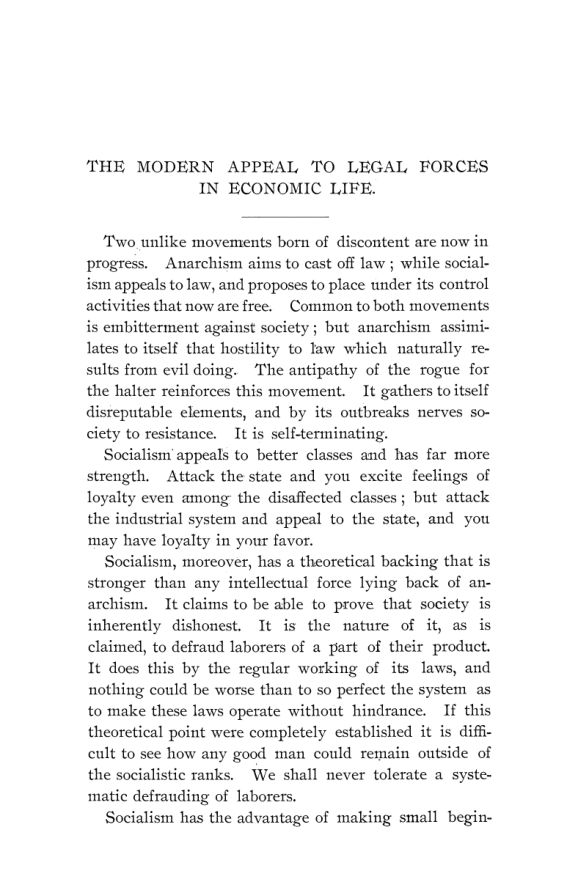

Nova York, 1894: a greve de Pullman, o papa e o limite da lei
Leitura: 5 min
Cinco trabalhos de dezembro de 1894: a greve que parou as ferrovias de Chicago, a encíclica sobre o trabalho, o desemprego medido às cegas e até onde a lei deve ir na economia.


Começou como uma greve privada nas oficinas da Pullman's Palace Car Company, em Chicago, em junho de 1894. Terminou com os ferroviários das linhas que partem da cidade de braços cruzados, o comércio interno paralisado e o correio atrasado. Meses depois, na sétima reunião anual da American Economic Association, no Columbia College, o comissário federal do Trabalho, Carroll D. Wright, chamou o episódio de marco de época.
O número duplo de outubro e dezembro de 1894 reúne os cinco trabalhos lidos naquele encontro. Todos rondam a mesma pergunta: o que a lei pode fazer, e o que não deve fazer, diante de salários, greves, trustes, desemprego e pobreza. As respostas divergem, às vezes dentro do mesmo texto, e é isso que dá interesse ao conjunto.
Onde termina a lei e começa o socialismo?
John B. Clark, de Amherst, presidente da associação, abriu com uma régua. Socialista de verdade, disse, não é a medida que parece radical, como o Estado dono de ferrovias, mas a que introduz um princípio arbitrário na divisão do produto. Tabelar preços e impor salários por tribunal ficam de um lado da linha; proteger o trabalhador não sindicalizado e o concorrente independente do truste, do outro. O truste, para ele, era uma greve às avessas:
“O truste é, antes de tudo, uma greve de empresários contra os consumidores” (“The trust is primarily a strike of entrepreneurs against consumers”)
Wright dizia não ter fé no socialismo de Estado nem na arbitragem compulsória. Mas lembrava que a lei de comércio de 4 de fevereiro de 1887 já obrigava os fretes interestaduais a serem razoáveis e justos, e que ferrovias e embarcadores pediam ao Congresso ainda mais regulação, com o projeto de pooling. Se o frete é regulado, por que não as condições de trabalho de quem move os trens? Sua conclusão tinha a forma de uma cobrança de coerência:
“exigir controle governamental parcial de um lado e insistir no laissez-faire do outro” (“to demand even partial governmental control on one side and to insist upon laissez faire upon the other”)
Quem são os desempregados, e quantos são?
Davis R. Dewey, do MIT, presidia a comissão de Massachusetts sobre os desempregados e começou pela confissão: quase não havia estatística. Em Boston, no inverno anterior, as contagens iam de menos de 6 mil, pelo censo da polícia, a 38 mil, pela estimativa da Andover House. Com dados assim, sobrava ao economista analisar as forças em jogo: máquinas, moda, migração de indústrias e crises de crédito.
O que um papa tinha a dizer a economistas?
John Graham Brooks leu a encíclica de Leão XIII sobre a questão operária como documento econômico. Ela condena o socialismo e declara inviolável a propriedade privada, mas admite que o contrato livre pode violar a justiça. Para Brooks, a porta para o Estado ficava aberta:
“a remuneração deve bastar para sustentar o assalariado num conforto razoável e frugal” (“the remuneration must be enough to support the wage earners in reasonable and frugal comfort”)
Arthur T. Hadley, de Yale, fechou o volume com população e capital. O freio à natalidade, sustentou, não é consciente, como dera a entender Malthus, nem automático, como diziam seus críticos socialistas: é institucional, obra da família moderna e da lei do capital.
Na minha leitura
Na minha leitura, a régua de Clark envelheceu melhor do que suas conclusões. A distinção entre regras que deixam a concorrência funcionar e regras que fixam o resultado continua a ser o primeiro teste de qualquer intervenção, da defesa da concorrência ao controle de preços. O que não envelheceu bem é a confiança de que a concorrência, deixada livre, entregaria ao trabalhador exatamente o que ele produz. Wright, menos teórico, acertou o ponto político: quem pede regulação para si não pode pedir mercado livre para os outros.
O texto mais moderno, porém, é o de Dewey. Ele admite que a política de socorro aos desempregados começou antes de alguém saber quantos eles eram, e que a diferença entre as contagens de Boston era de mais de seis vezes. É um lembrete que vale para qualquer época: o diagnóstico vem antes do remédio, e um número ruim é pior do que número nenhum se ninguém disser que é ruim.
Glossário
- arbitragem compulsória
- decisão de um tribunal sobre salários ou condições de trabalho que as partes são obrigadas a cumprir.
- produtividade final (marginal) do trabalho
- o acréscimo de produção trazido pela última turma de trabalhadores contratada; para Clark, a medida do salário natural.
- truste
- união de empresas de um mesmo setor sob comando comum, capaz de restringir a produção e elevar preços.
- pooling
- acordo entre ferrovias para dividir tráfego ou receitas, em vez de competir por fretes.
- servidor quase público
- empregado de empresa privada de serviço essencial com deveres perante o público, além do patrão.
- patronagem
- na tradição católica, a tutela social exercida por patrão, padre e chefe de família, em vez do Estado.
- sindicato misto
- associação que reúne patrões e empregados do mesmo ramo, ideal de parte dos católicos franceses e belgas.
- freio preventivo
- em Malthus, a redução da natalidade, em oposição aos freios positivos da fome e da doença.
Artigos desta edição
- The Modern Appeal to Legal Forces in Economic Life — John B. Clark (Amherst College); discurso presidencial (pp. 9–30). Clark testa a tese socialista de que a sociedade frauda o trabalhador. Usa uma fábrica com mil homens e US$ 1 milhão de capital: acrescente cem homens sem mudar o capital, e o tecido a mais que eles produzem, menos o custo dos materiais, é o salário natural da turma. Com concorrência entre setores, esse produto da unidade final de trabalho tende a igualar-se em toda parte. O monopólio verdadeiro deprime o padrão geral ao empurrar trabalhadores para outros ramos. Daí a régua: a arbitragem compulsória e o tabelamento de preços introduzem um elemento arbitrário na distribuição; a arbitragem apoiada só na opinião pública, a proteção ao não sindicalizado e o combate à discriminação de preços pelos trustes reforçam a lei natural. Como ilustração, propõe algo análogo à cláusula de nação mais favorecida: todo comprador teria direito ao menor preço cobrado em outra praça. Conclui que a concorrência sobreviverá por força das coisas. JSTOR
- The Chicago Strike — Carroll D. Wright (Comissário do Trabalho dos Estados Unidos) (pp. 33–50). Wright descreve a greve de junho e julho de 1894 como combinação de greve e boicote: a American Railway Union boicotou os vagões Pullman, e a General Managers' Association defendeu o tráfego das ferrovias. O episódio firmou o direito federal de enviar tropas a um estado para proteger interesses federais, como o correio, ampliou o uso da injunção pelos tribunais e consolidou a ideia de que ferroviários são servidores quase públicos. O centro do texto é uma revolução silenciosa: a lei de 1887 sobre fretes já seria socialismo de Estado, e o projeto de pooling (H.R. 7273) aprofundaria o controle, a pedido de ferrovias e embarcadores. Wright defende o projeto de arbitragem H.R. 8259, com mediação, investigação pública e arbitragem voluntária, na linha da mensagem de Grover Cleveland de 22 de abril de 1886, reproduzida em apêndice. Foi sob a lei de 1888 que o presidente nomeou a comissão de inquérito da greve. JSTOR
- Irregularity of Employment — Davis R. Dewey (Massachusetts Institute of Technology; presidente da comissão estadual de Massachusetts sobre os desempregados) (pp. 53–67). Dewey mostra que o desemprego virou questão pública em vários países ao mesmo tempo: circulares na Inglaterra, na Holanda e na Espanha, obras públicas em cidades alemãs, debates na Austrália e um plebiscito na Suíça, em 3 de junho, que rejeitou o direito ao trabalho por 308.289 votos a 75.880. Pergunta se os desempregados são uma classe nova ou o velho pobre com outro nome, e conclui que a categoria inclui também o trabalhador de bom caráter. Os dados são frágeis: em Boston, as estimativas iam de menos de 6 mil a 38 mil. Entre as causas, destaca a máquina em fábricas maiores e concentradas, que afeta mais operários de uma vez; uma nova máquina têxtil reduziria o custo em um sexto de centavo por jarda, o que equivaleria a 3% a 5% de dividendo. A troca de pessoal também peneira os menos aptos. O remédio sugerido é educação industrial mais ampla, que permita mudar de ofício. JSTOR
- The Papal Encyclical Upon the Labor Question — John Graham Brooks (pp. 71–82). Brooks situa a encíclica num debate antigo dentro da Igreja, travado em congressos como os de Malines e Liège, entre conservadores defensores da patronagem e dos sindicatos mistos e uma ala democrática que pedia a ação do Estado. O texto papal condena o socialismo e afirma a inviolabilidade da propriedade privada, mas, nota Brooks, admite intervenção estatal no trabalho dominical e na proteção de mulheres e crianças, deixa tempo, lugar e circunstância decidirem cada caso e põe a justiça acima do contrato salarial. Aceita também os sindicatos independentes, que na França cresceram muito mais depressa que os mistos depois da lei de 1884. Brooks pergunta se uma doutrina que tem a propriedade, a herança e o assalariamento como permanentes conterá o movimento democrático. Entre os efeitos, aponta mais unidade de opinião, menos retórica contra a renda do capital e a recusa do próprio conde de Mun ao rótulo de socialismo cristão. JSTOR
- Population and Capital — Arthur T. Hadley (Yale University) (pp. 85–94). Hadley distingue capital no sentido individual, propriedade arriscada para obter mais propriedade, do capital no sentido social, os bens usados para produzir. Liga a defesa do primeiro à teoria de Malthus por uma história institucional: nas sociedades primitivas, natalidade de 50 a 60 por mil impede acumular; a família militar concentra a pressão populacional em poucos, de modo injusto, mas cria capital; a propriedade fundada no trabalho e, depois, o investimento selecionam os prudentes. Contra os críticos socialistas, nega que o conforto cause a natalidade baixa: ambos viriam da prudência, e a lei dos pobres inglesa, ao tornar o conforto independente dela, teria elevado a natalidade. Conclui que os freios preventivos não são conscientes nem automáticos, mas institucionais, sustentados pela família moderna e pela lei do capital. Em nota, registra que Frank Fetter antecipara parte dessas conclusões. JSTOR
Fontes
- The Modern Appeal to Legal Forces in Economic Life (pp. 9–30). JSTOR · Internet Archive (PDF)
- The Chicago Strike (pp. 33–50). JSTOR · Internet Archive (PDF)
- Irregularity of Employment (pp. 53–67). JSTOR · Internet Archive (PDF)
- The Papal Encyclical Upon the Labor Question (pp. 71–82). JSTOR · Internet Archive (PDF)
- Population and Capital (pp. 85–94). JSTOR · Internet Archive (PDF)
- Sumário da edição no JSTOR: Publications of the American Economic Association, vol. 9, nº 5/6.
Documento em domínio público (EUA, publicado antes de 1931), via JSTOR Early Journal Content e Internet Archive. Resumo e comentário do autor deste site, sem afiliação com a American Economic Association. Encontrou um erro? Escreva: a correção é publicada no próprio texto, com data.
← Nº 43 · Bevan, 1894: William Petty, o agrimensor que contou a Inglaterra Nº 45 · Breckenridge, 1895: a moeda bancária que o Canadá não quis amarrar →